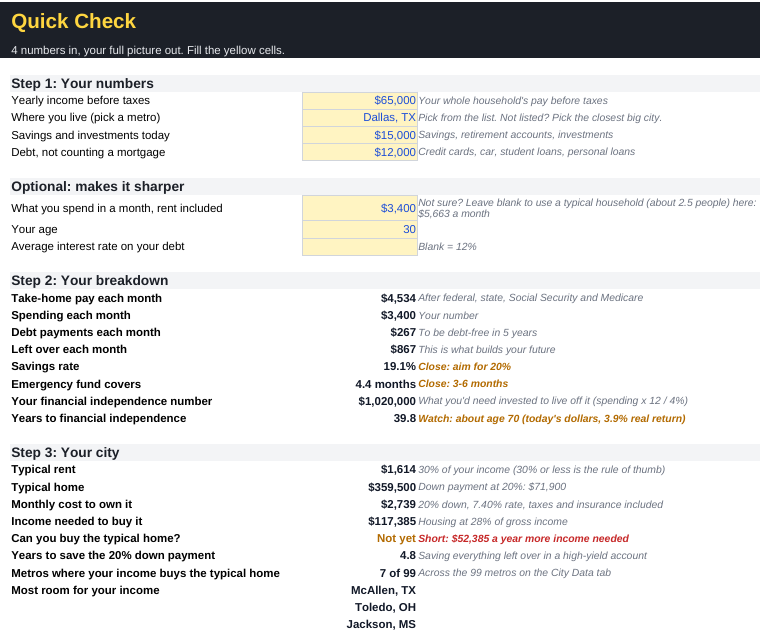

The question every episode answers
When can a $92K data analyst stop working?
At 46. Or at 41 with one smart career move.
Each FinancesBreakdown episode follows one hypothetical person, a nurse, a welder, a teacher, through every step of the personal finance flowchart. We use real 2026 tax rules and public data, and show the exact age they could reach financial independence.
Run the numbers on your own life
Your Money Breakdown is the spreadsheet that runs our numbers on yours: four numbers for a quick check, or the full plan with your paycheck, debts, FI age and what it takes to buy a home in 99 metros. The Quick Check is free. The Full Plan is $9.99.

Recent breakdowns
Full episodes run 9 to 12 minutes with chapters. Each one comes with three Shorts that answer the headline question in under a minute.


How a breakdown works
We run the same seven steps for every person, in the same order, so you can compare one job, one income, one choice against another.
Budget
What comes in, what goes out, and what's left each month after taxes.
Emergency fund
A cash cushion before anything else, sized to their real expenses.
Debt
Expensive debt first. Anything at or below the prime rate can wait.
HSA
Triple tax-advantaged, if their health plan allows one.
IRA
Roth or traditional, based on their tax bracket today.
401(k)
Employer match first, then up to the yearly limit.
Invest
Everything else goes to a brokerage account until they reach their number.
Then we test the question most people are curious about: should they stay put or switch jobs every couple of years? We simulate both, including the 401(k) match they'd leave behind when they switch.
Where the numbers come from
Every statistic in an episode comes from a public source, and every source is listed in that video's description. Rates that move every month, like the prime rate, inflation and credit card interest, are refreshed automatically at the start of each month.
- IRS contribution limits and tax brackets
- Bureau of Labor Statistics wages and inflation
- Federal Reserve consumer credit (G.19)
- Atlanta Fed Wage Growth Tracker
- ADP Pay Insights
- Vanguard and Fidelity retirement plan data
- Census Bureau housing and income data
- The 4% rule research (Bengen, Trinity study)
Questions
Are the people in the videos real?
No. Every person is hypothetical, built from realistic pay, spending and debt for their job and city. That lets us show the math clearly without exposing anyone's finances.
Is this financial advice?
No. It's general education: one way to read the numbers for one made-up situation. Your own taxes, benefits and goals will differ, so check your plan with a qualified professional before acting on it.
Can I suggest a job or a scenario?
Yes. Comment your age, income and spending on any episode, and we may build a hypothetical scenario inspired by it. We never use real names or personal details.
Why does a job switch help so much in some episodes and not others?
It depends on the raise, how often they switch, and how much unvested 401(k) match they leave behind. Sometimes waiting for a vesting date is worth more than the raise itself, and the episode shows that trade-off.